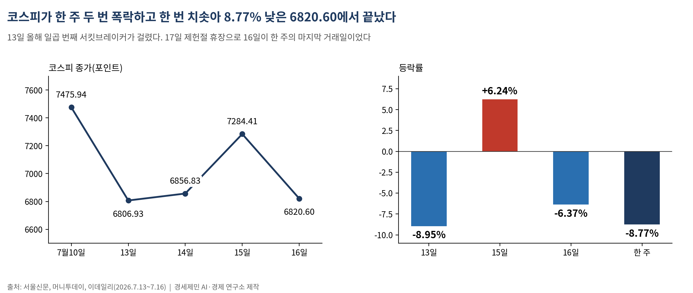
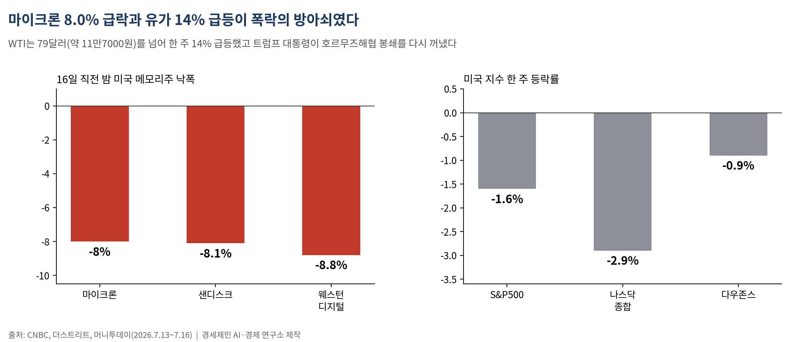
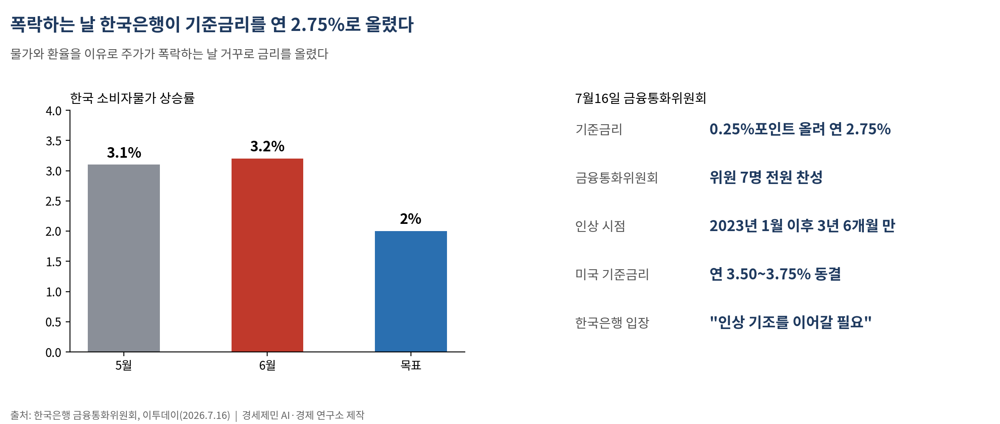
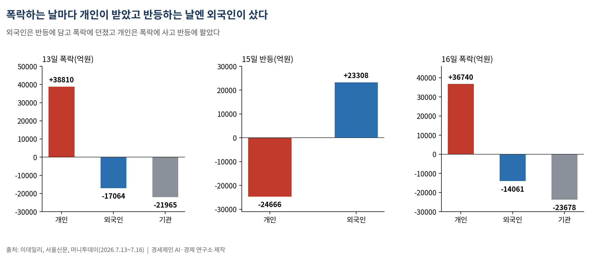

[주식공부] 코스피 한 주 8.77% 폭락…폭락하는 날 한국은행은 금리를 올렸다
월요일 -8.95%·목요일 -6.37% 두 번 무너지고 수요일 +6.24% 치솟아…한국은행 3년 6개월 만에 기준금리 2.75%로 인상, 국제유가 한 주 14% 급등

(데이터 기준시점: 2026년 7월 16일 종가 / 17일 제헌절 휴장)
지난주 코스피는 655.34포인트(8.77%) 내린 6820.60에 마감했다. 세 주 연속 하락이다. 17일은 올해 다시 공휴일로 되돌아온 제헌절이라 증시가 쉬어, 16일 목요일이 한 주의 마지막 거래일이었다.
한 주 안에서 지수는 두 번 무너지고 한 번 치솟았다. 13일 월요일 8.95% 폭락, 15일 수요일 6.24% 반등, 16일 목요일 다시 6.37% 폭락이다. 그리고 지수가 6% 넘게 빠진 그 목요일, 한국은행은 기준금리를 올렸다.
1. 롤러코스터를 탄 한 주, 결국 8.77% 낮은 곳에서 끝났다

13일 코스피는 669.01포인트(8.95%) 내린 6806.93에 마쳤다. 올해 일곱 번째 서킷브레이커(주가가 급변하면 거래를 잠시 멈추는 비상장치)가 걸렸다. 14일은 장중 5%까지 밀려 6465선까지 빠졌다가 6856.83으로 되돌아섰고, 15일은 427.58포인트(6.24%) 뛴 7284.41로 한 주 최고를 찍었다.
하루 만에 분위기가 뒤집혔다. 16일 지수는 463.81포인트(6.37%) 내린 6820.60으로 다시 주저앉았다. 코스닥도 같은 날 4.53% 빠진 791.84로, 한 주 5.44% 내렸다.
오르는 날과 빠지는 날의 낙차가 이렇게 컸다. 그런데도 한 주를 통틀면 지수는 제자리가 아니라 8.77% 낮은 곳에 있었다. 큰 반등 한 번이 큰 폭락 두 번을 지우지 못했다.
2. 방아쇠는 미국 메모리와 국제유가였다

폭락의 불씨는 미국에서 왔다. 16일 폭락 직전 밤, 미국 메모리반도체주가 무너졌다. 마이크론이 8.0%, 샌디스크가 8.1%, 웨스턴디지털이 8.8% 빠졌다. 인공지능(AI) 투자를 이끌던 대형 기업들이 설비투자를 줄일 수 있다는 우려, 메모리 값이 고점을 찍었다는 '반도체 고점론'이 다시 불붙었다. 중국 스타트업 문샷AI가 미국에 맞설 고성능 모델을 내놓은 것도 부담을 키웠다.
미국 증시도 한 주 내렸다. 스탠더드앤드푸어스(S&P)500지수가 1.6%, 나스닥종합지수가 2.9%, 다우존스산업평균지수가 0.9% 빠졌다. 반도체가 지수를 끌어내린 건 미국도 같았다.
다만 시가총액 1·2위가 모두 반도체인 코스피는 그 충격을 두 배로 받았다. 삼성전자는 한 주 25만4000원까지, SK하이닉스는 184만2000원까지 밀렸다. 반도체 쏠림이 큰 시장이 더 크게 흔들렸다.
3. 폭락하는 날 금리를 올린 한국은행

16일 한국은행 금융통화위원회는 기준금리를 0.25%포인트 올려 연 2.75%로 정했다. 위원 7명 전원 찬성이었다. 2023년 1월 이후 3년 6개월 만의 첫 인상이다.
기준금리는 중앙은행이 시중은행에 돈을 빌려줄 때 매기는 기준 이자다. 이게 오르면 대출·예금 금리가 줄줄이 따라 오른다. 보통 주가가 폭락하면 중앙은행은 금리를 내려 돈을 풀어 시장을 떠받친다. 한국은행은 거꾸로 갔다. 이유는 물가와 환율이다. 6월 소비자물가는 3.2%로 5월 3.1%보다 올라 목표 2%를 크게 웃돌았다. 유가가 뛰고 원화가 약하면 수입 물가가 올라 인플레이션이 심해진다. 금리를 올리면 원화 값을 지켜 수입 물가를 누른다.
금리 인상은 주식에 양날이다. 금리가 오르면 앞으로 벌 이익을 지금 가치로 매길 때 더 깎아 내려, 주가 밸류에이션(기업 가치에 견준 주가 수준)에는 부담이다. 미국 기준금리가 연 3.50~3.75%인데 한국이 2.75%로 낮으면, 돈은 금리 높은 미국으로 흐른다. 그 자금 이탈을 막으려는 방어이기도 하다. 한국은행은 "앞으로도 인상 기조를 이어갈 필요가 있다"며 추가 인상을 내비쳤다.
4. 세 번 떨어지는 칼날을 받은 쪽은 개인이었다

수급표를 보면 손이 갈렸다. 13일 개인은 3조8810억원어치를 순매수했고, 외국인과 기관은 각각 1조7064억원, 2조1965억원을 팔았다. 16일에도 개인이 3조6740억원을 사들이는 동안 외국인은 1조4061억원, 기관은 2조3678억원을 내던졌다. 폭락하는 날마다 개인은 싼값에 받아 들었다.
반대로 반등한 15일에는 외국인이 2조3308억원을 순매수했고, 개인은 2조4666억원을 팔았다. 외국인은 반등에 담고 폭락에 던졌다. 개인은 폭락에 사고 반등에 팔았다.
한 주가 8.77% 낮은 곳에서 끝났으니, 세 번의 폭락일에 저가매수로 받아 든 개인의 매수분은 손실 구간에 들어가 있다. 지수를 만든 것은 반도체 공장과 엔지니어지만, 출렁임의 값은 빚 없이 저가매수에 나선 개인이 더 많이 치렀다.
5. 거시 다섯 잣대와 다음 주 분수령
거시 다섯 잣대는 이렇게 움직였다. 금리는 한국이 2.75%로 올랐고 미국은 연 3.50~3.75% 동결 상태다. 미국 10년물 국채금리는 16일 4.56%로 유가와 중동 긴장에 올랐다. 국제유가는 서부텍사스산 원유(WTI)가 배럴당 79달러(약 11만7000원)를 넘어 한 주 14% 급등했다. 트럼프 미국 대통령이 호르무즈해협 봉쇄를 다시 꺼낸 탓이다. 원달러 환율은 16일 1487원 안팎으로, 7월초 1500원선보다 아래에서 버텼다. 물가는 한국이 3.2%, 미국이 6월 3.5%로 시장 예상(3.8%)을 밑돌았다.
다음 주 달력은 촘촘하다. 20일 증시가 다시 열리고, 22일부터 구글 등 미국 빅테크 실적이 줄줄이 나온다. AI 투자를 줄이는지 아닌지가 '반도체 고점론'의 1차 검증대다. 28~29일에는 미국 연방준비제도 회의(FOMC)가, 29일 SK하이닉스, 30일 삼성전자 확정실적 설명회가 대기한다.
기본 시나리오는 6700~7100선의 매물 소화다. 유가가 봉합되고 빅테크가 투자를 지키면 낙폭 만회가 빨라진다(상향). 유가가 80달러대에 눌러앉거나 고점론이 재점화하면 6600선을 다시 시험한다(하향). 사상 최대 실적에 안도하는 일과, 그 실적이 나온 달에 금리가 오르고 외국인이 팔았다는 표를 읽는 일은 다른 자리에서 시작한다.
─────────────────────
※ 이 기사는 인공지능 프로그램 클로드 오푸스 4.8(Claude Opus 4.8)을 활용해 작성했다.
참고문헌
· "[마감시황] '검은 월요일' 코스피 9% 급락, 6806.93 마감", 뉴스핌, 2026.7.13., https://www.newspim.com/news/view/20260713000993
· "외인ㆍ기관 '팔자'에 코스피 6.4% 급락해 6800선 마감⋯삼전 8%ㆍSK하닉 12%↓", 이투데이, 2026.7.16., https://www.etoday.co.kr/news/view/2604591
· "[마감시황] 코스피, '반도체 악재'에 6% 급락…7000선 반납", 뉴스핌, 2026.7.16., https://www.newspim.com/news/view/20260716001003
· "한은 금통위, 3년 6개월 만에 '금리 인상 모드'로", 이투데이, 2026.7.16., https://www.etoday.co.kr/news/view/2604388
· "[속보] 한은 '금통위원 전원 기준금리 인상 찬성'…추가 인상 강력 시사", 프레시안, 2026.7.16., https://www.pressian.com/pages/articles/2026071611100467706
· "한국은행 기준금리 추이", 한국은행, 2026.7.16., https://www.bok.or.kr/portal/singl/baseRate/list.do?dataSeCd=01&menuNo=200643
· "S&P 500 closes lower, Nasdaq falls more than 1% as chip stocks suffer", CNBC, 2026.7.16., https://www.cnbc.com/2026/07/16/stock-market-today-live-updates.html
· "Dow, S&P 500, Nasdaq post weekly losses as semiconductors get smoked", Yahoo Finance, 2026.7.17., https://finance.yahoo.com/markets/live/stock-market-today-friday-july-17-dow-sp-500-nasdaq-092345307.html
· "Treasury yields rise amid mounting U.S.-Iran tensions", CNBC, 2026.7.16., https://www.cnbc.com/2026/07/16/us-treasury-yields-wall-street-inflation-employment-data.html
· "The Fed's next FOMC meeting is scheduled for July 28–29, 2026", KuCoin, 2026.7., https://www.kucoin.com/news/flash/fed-s-next-fomc-meeting-scheduled-for-july-28-29-2026
#주식공부 #코스피 #폭락장 #한국은행 #기준금리인상 #반도체고점론 #서킷브레이커 #국제유가 #호르무즈 #FOMC